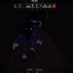
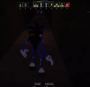

Exe (Also known as Faker) is the fifth monster added in Pillar Chase 2. He is one of many "EXEs", creepypasta characters based off of both the original Sonic.EXE and the Sonic the Hedgehog franchise as a whole, created and owned by Raven. He is most popularly known for his appearance in the Friday Night Funkin' mod, Vs Sonic.EXE, though he will also be the main antagonist of his own upcoming game, Sonic Prototype 2017. He can be unlocked for 1350 coins in the shop (Previously 1425 coins before the Black Friday Event's conclusion)..
|  When pressing 1 Exe will charge forward with an outstretched hand. If he comes in contact with a player, he will grab them for 10 damage, then bite them in the face for an additional 40, dealing 50 damage overall. Afterwards, he will wipe his mouth, giving the player some time to escape during the animation. During the bite animation, EXE regenerates stamina while the survivor does not. Has a 15 second cooldown. |
 When pressing 2 Exe will place a oval of black tendrils on the floor at his exact location. If a player steps on it, they will be trapped and have to hold E 15 times to free themselves from the trap. Other players can also help free the trapped player by holding E repeatedly while near them. When a player is caught in a Thorny Grave, they will be highlighted for the duration, and EXE will gain a brief speed boost. The trap will kill the player if they are 5 HP or under. EXE can place up to 5 traps at a time. Has a 5 second cooldown. |